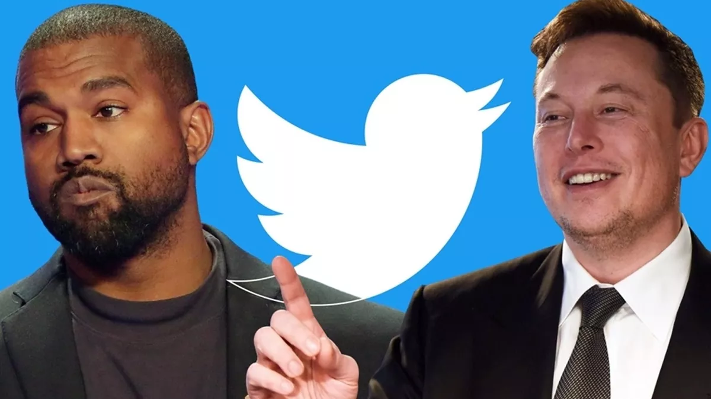
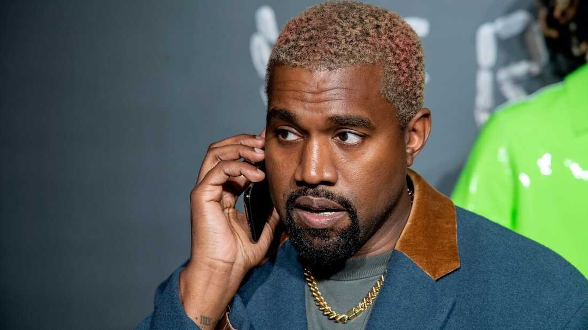

Elon Musk fişinin çekti! Kanye West'in Twitter hesabı askıya alındı

Dünyaca ünlü rapçi Kanye West'e Twitter'dan büyük şok geldi. Twitter, ABD'li rapçi Kanye West'in hesabını, platformun kurallarını ihlal ettiği gerekçesiyle yeniden askıya aldı. West, büyük şaşkınlık yaşadı.

Sosyal medya şirketi Twitter, ABD'li rapçi Kanye West'in hesabını,
platformun kurallarını ihlal ettiği gerekçesiyle yeniden askıya
aldı.
Twitter'ın sahibi Elon Musk, "Elimden gelenin en iyisini yaptım.
Buna rağmen şiddete teşvik yasağımızı yeniden ihlal etti. Hesap
askıya alınacak." dedi.
Platform, West'in hesabını askıya almadan önce bir tweetini de
kısıtladı.
ANTİSEMİTİK YORUM YAPMASI ÜZERİNE ELEŞTİRİLERE MARUZ KALDI
Ekimde yasal olarak adını "Ye" olarak değiştiren rapçi, sosyal
medyadaki antisemitik açıklamaları nedeniyle Twitter ve
Instagram'ın hesabını askıya almasından kısa süre sonra "sağcı"
sosyal medya şirketi Parler'ı satın alma kararı almıştı.
Ye, geçen haftalarda bir TV programında, aşırı sağcı komplo
teorisyeni Alex Jones ile yaptığı röportajda, Hitler'i övmek de
dahil olmak üzere, bir dizi antisemitik yorumları nedeniyle
eleştirilere maruz kalmıştı.
Ye, röportajda, "Nazilerin yanında 'kötü' kelimesinin kullanılmasından hoşlanmıyorum. Yahudileri seviyorum ama Nazileri de seviyorum." demişti.